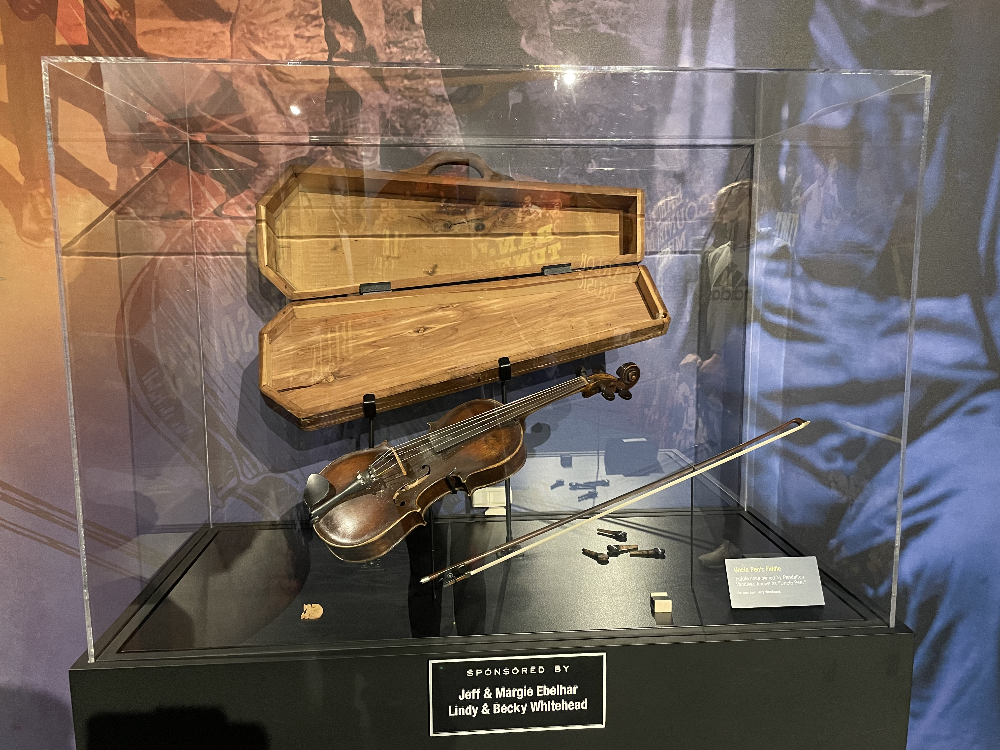

How we got here
The emergence of bluegrass music is a uniquely American story. A variety of musical styles evolved and combined In the 20th century, eventually forming a brand new genre. The music of the rural South blended with other sounds as folks listened to the radio, played records on the phonograph, and collaborated with other musicians in an ever-more transient nation. Streams from the blues, jazz, gospel ballads, country and more flowed into the river of music that would become bluegrass.
The banjo originated in Africa and was traditionally made from a hollow gourd body and an animal skin head. The instrument was recreated in America by enslaved African craftsmen. Until the early 19th century, the banjo was played predominately by black musicians. White musicians learned to from black musicians and made it play the banjo the centerpiece for "blackface" minstrel shows that ridiculed black culture. By the 20th century, many black communities turned to ragtime, jazz, and the blues. The banjo was increasingly adopted by southern whites, and a variety of styles emerged for its use in old-time music.
The fiddle (a violin played in folk style) has a legacy that reaches back long before Europeans and Africans arrived on this continent. The first bowed string instruments appeared in the 9th century, and the violin took its current form in the 17th century. Classic fiddle tunes such as "Soldier's Joy" trace back over 200 years to origins in the British Isles. The violin was adopted by the common folk who found its small size easy to carry, including journeys on ships to America. New fiddle traditions were created from Canada to Louisiana, and especially in the rural South.
Information provided by The Bluegrass Museum and Hall of Fame.